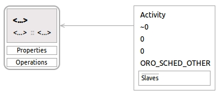
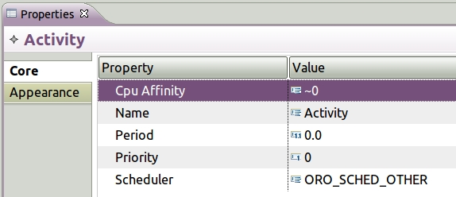

Adding an Activity
Adding an Activity is optional since a TaskContext always has an Activity
associated with it even if it is not shown in the model. If you want to define
an Activity with non default values then you have to add an Activity to the
model diagram and and then associated the Activity to the TaskContext:

The easiest way to add a Acitvity or any other model
element is to select, drag and drop the element from the
Palette to the diagram.

- Select an Activity.
- Drag the Activity to the diagram and drop near the
TaskContext to which you want to attach it to.
- Select Activity->TaskContext connector.
- Hover the mouse over the Activity and right click on the
mouse.
- Extend the connector from the Activity to the
TaskContext.
- Release the right mouse button over the selected
TaskContext to complete the connector.
- Select the Activity and open the Properties
View.

- Cpu Affinity is for multiproccesor systems and
normally should be left at the default value.
- Select the Value cell for Name and type
the Activity name.
- Select the Value cell for Period and
input a numerical value.
- Select the Value cell for Priority and
input an integer value.
- Select the Value cell for Scheduler and
you may choose between
ORO_SCHED_OTHER and
ORO_SCHED_RT.
- Save your work.